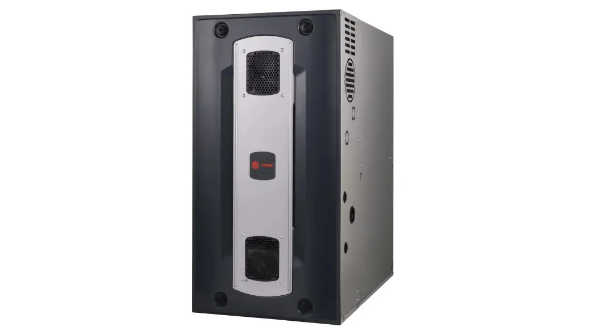

Heat that works when Toledo winter hits.
Same-day diagnostics on failed furnaces during heating season. When it's time for a new unit, we install Trane and Air Quest gas furnaces at honest prices.
When to call us
Most common signs your furnace needs attention:
- Blowing cold or lukewarm air
- Short cycling (turns on and off every few minutes)
- Loud banging, whining, or popping when it starts up
- Burner not lighting, or pilot won't stay lit
- Yellow burner flame instead of blue (potential CO risk, call now)
- Gas smell near the unit (leave the house, call the gas company, then call us)
- Higher-than-normal heating bills
Diagnostic fee is $89, credited toward any repair you approve.
Repair or replace?
Modern gas furnaces last 15 to 20 years. We don't push replacement when repair is the right move. Rough rule: if your furnace is under 12 years old and the repair is under $800, repair almost always wins.
Signs it's probably replacement time:
- Unit is 15+ years old and the heat exchanger is cracked
- Two or more major repairs in the last two years
- Efficiency is under 80% AFUE (new units are 90%+)
- You hear loud booms at startup (delayed ignition, safety issue)
No heat during a cold snap? Call (419) 777-6061. We prioritize no-heat calls in winter.
Call now →Our process
Diagnose
Full system check, CO test, and a plain-English explanation of what's wrong.
Quote
Repair-vs-replace breakdown with honest numbers on both sides.
Fix
Most repairs done same-visit. New installs typically scheduled within a week.
What new furnace installation costs in Toledo
Every home is different, but here's roughly where most Toledo-area furnace replacements land. Includes equipment, labor, permit, and haul-away.
Typical furnace installation ranges
- 60,000 BTU, 1,200–1,600 sq ft home$3,800 – $5,500
- 80,000 BTU, 1,600–2,200 sq ft home$4,500 – $6,800
- 100,000 BTU, 2,200–3,000 sq ft home$5,500 – $8,500
- 120,000 BTU, 3,000+ sq ft home$6,500 – $10,500
- Variable-speed premium (Trane XV)Add $1,000 – $2,500
Ranges vary based on ductwork condition, venting requirements, and efficiency tier. We quote the specifics after a site visit.
Brands we install
Our primary gas furnace lines are Trane (top warranty coverage) and Air Quest (solid mid-range value). Both come with 10-year parts warranty when registered. We can service any brand: Carrier, Lennox, Rheem, Goodman, York.
Frequently asked
Why is my furnace blowing cold air?
Most common causes: pilot light out on older units, failed igniter on newer units, thermostat set to 'fan on' instead of 'auto', flame sensor needs cleaning, or the furnace is in safety lockout after failed ignition attempts. A diagnostic call usually pinpoints it in 15 to 30 minutes.
How much does furnace repair cost in Toledo?
Most repairs run $150 to $900 depending on the part. Igniter replacement is on the low end. Blower motor and inducer motor replacements are on the high end. Diagnostic is $89, credited toward repair.
When should I replace versus repair my furnace?
Rough rule: if the furnace is under 12 years old and the repair is under $800, repair. Over 15 years old with a cracked heat exchanger or multiple recent failures, replace. We'll walk you through the math either way.
Do you service older furnaces?
Yes. We work on most gas furnaces regardless of age as long as parts are still available. Pre-1990 units sometimes require custom fabrication. We'll tell you honestly if a unit is no longer worth repairing.
Do I need a permit for a new furnace?
Yes, Toledo and most Northwest Ohio municipalities require mechanical permits for furnace installations. We pull it as part of the job and handle inspection. Fee is rolled into our quote.
No heat? Let's fix it.
Furnace emergencies don't wait for business hours. Neither do we.